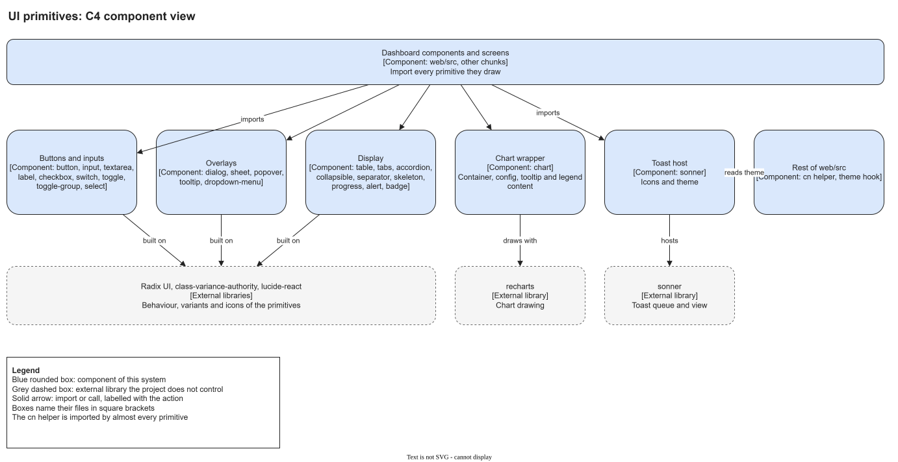

draft draft inferred covers web/src/components/ui/*
UI primitives C4
This view shows how the basic interface parts are grouped and what they are built on. It helps a developer see that almost nothing here is custom: each part wraps a library part and adds the project style. Knowing that tells them where a behaviour really comes from.
What the diagram shows
The dashboard components import the primitives: the column chooser takes the button and the dropdown menu, and the page states take the button, collapsible, skeleton and toggle group. web/src/components/columns.tsx:4-12 web/src/components/states.tsx:4-12
Buttons and inputs are thin wrappers that add variants and a class name merge over Radix parts and plain elements. web/src/components/ui/button.tsx:40-61 web/src/components/ui/button.tsx:2-4
Overlays wrap the Radix dialog, popover, tooltip and menu parts and add icons from lucide-react. web/src/components/ui/dialog.tsx:10-14 web/src/components/ui/dialog.tsx:5-6
Display primitives add styles to tables, tabs, accordion rows, alerts, badges, skeletons and progress bars. web/src/components/ui/table.tsx:4-17 web/src/components/ui/tabs.tsx:8-25 web/src/components/ui/badge.tsx:28-45
The chart wrapper hands a config of labels and colours to its children through a context and draws with recharts. web/src/components/ui/chart.tsx:39-79 web/src/components/ui/chart.tsx:3-3
The toast host reads the theme from the rest of the web source folder and renders the sonner library with its own icons. web/src/components/ui/sonner.tsx:10-10 web/src/components/ui/sonner.tsx:8-8
In the web source the prototype page mounts the toast host. web/src/prototype/Prototype.tsx:6-6
Capability and related functionality
The diagram realises the lowest layer of the dashboard interface. The vocabulary is in UI primitives concepts, the file imports are in UI primitives imports, and the failure paths are in UI primitives failure flow. The parts built from these primitives are drawn in Shared components C4 and explained in Web ui UI components Overview.
UI primitives C4

Code references
| Code | What it shows |
|---|---|
web/src/components/columns.tsx:4-12 |
Column chooser imports |
web/src/components/states.tsx:4-12 |
Page states imports |
web/src/prototype/Prototype.tsx:6-6 |
Toast host import in the prototype |
web/src/components/ui/button.tsx:2-4 |
Button libraries |
web/src/components/ui/chart.tsx:39-79 |
Chart container |
web/src/components/ui/sonner.tsx:10-10 |
Toast theme hook |
web/src/components/ui/sonner.tsx:8-8 |
sonner import |